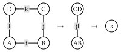
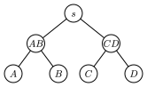

Tensor Network Contraction Order Optimization with Optimal Tree Decomposition
This blog is a technical note for the Google Summer of Code 2024 project "Tensor network contraction order optimization and visualization" released by The Julia Language, where I developed a package TreeWidthSolver.jl for calculating the tree decomposition with minimal treewidth of a given simple graph and made it a backend of OMEinsumContracionOrders.jl.
This blog covers the following contents:
- Contraction order of tensor network
- Tree decomposition and its relation to contraction order
- Finding tree decomposition with minimal treewidth
In this blog, we will use the Einsum notation from OMEinsum.jl.
Tensor Network Contraction Order
In this blog, we will not introduce the basic concept of tensor network, since it has been well introduced in many other places. Instead, we recommend the following references:
- For readers with physics background: https://tensornetwork.org/diagrams/
- For readers want to get a formal definition: Chapter 2 of https://epubs.siam.org/doi/abs/10.1137/22M1501787
For simplicity, in the following sections, we will use the Einstein summation formula to represent the tensor network as high dimensional arrays' multiplication: $R_{i,j,k,...} = \sum_{a, b, c, ...} A_{a,...}B_{b,...}...$ It is easy to see that the most direct way to calculate the result is to loop over all the indices naively, which requires $O(d^N)$ operations, where $d$ is the dimension of the index and $N$ is the number of indices. However, such a direct calculation is not efficient. Considering the following simple tensor network:

where the tensors are represented by the circles and the indices are represented by the lines, representing the following contraction to scalar $s$: $s = \sum_{i,j,k,l} A_{ij} B_{ik} C_{jl} D_{lk},$ and can be represented as the following Einstein summation formula:
julia> using OMEinsum
julia> einsum = ein"ij, ik, jl, lk -> "
ij, ik, jl, lk ->where pointing to nothing means the result is a scalar. Here we simply assume that all indices are of the same dimension $D$. Then the naive way to calculate the result is to loop over all the indices, which requires $O(D^4)$ operations and no intermediate tensors are produced.
However, another way to calculate $s$ is shown below:

where we first contract $A$ and $B$ to get $AB$, and contract $C$ and $D$ to get $CD$, which are rank-2 intermediate tensors, and then contract $AB$ with $CD$ to get the scalar $s$. That is equivalent to the following Einstein summation formula:
julia> nested_ein = ein"(ij, ik), (jl, lk) -> "
jk, jk ->
├─ ij, ik -> jk
│ ├─ ij
│ └─ ik
└─ jl, lk -> jk
├─ jl
└─ lkIn this way, the total number of operations is $O(2 D^{3} + D^{2})$, which is smaller than the naive calculation, while the trade-off is that we need to store the intermediate tensors $AB$ and $CD$ with size of $O(D^{2})$, as shown below:
# here we take D = 16
julia> size_dict = uniformsize(einsum, 2^4)
julia> contraction_complexity(einsum, size_dict)
Time complexity: 2^16.0
Space complexity: 2^0.0
Read-write complexity: 2^10.001408194392809
julia> contraction_complexity(nested_ein, size_dict)
Time complexity: 2^13.044394119358454
Space complexity: 2^8.0
Read-write complexity: 2^11.000704269011246We say such a contraction is with time complexity of $O(D^{3})$ and space complexity of $O(D^{4})$, which are defined as follows:
- time complexity: the number of Floating Point operations required to calculate the result;
- space complexity: the largest size of the intermediate tensors.
For larger tensor networks, the contraction order is important, since it can greatly reduce the time complexity of the calculation.
In actual calculation, we prefer binary contractions, i.e., contracting two tensors at a time, by converting these two tensors as matrices, so that we can make use of BLAS libraries to speed up the calculation. In this way, a given contraction order can be represented as a binary tree. The contraction tree can be represented as a rooted tree, where the leaves are the tensors to be contracted and the internal nodes are the intermediate tensors. The contraction tree corresponding to the above example is shown below:

Generally speaking, our target is to find a binary contraction order, with minimal time complexity or space complexity, which is called the optimal contraction order.
Tools for Tensor Network Contraction Order Optimization
In practice, there are many tools for tensor network contraction order optimization, including:
- OMEinsumContractionOrder.jl: an open-source Julia package for finding the optimal contraction order of tensor networks, is used as backend of OMEinsum.jl and ITensorNetworks.jl.
- Cotengra : a python library for contracting tensor networks or einsum expressions involving large numbers of tensors.
Various methods have been proposed for optimizing the contraction order, as shown in the table below, here we introduce some of them.
| Optimizer | Description | Available in |
|---|---|---|
| Exhaustive Search | Slow, exact | TensorOperations.jl |
| Greedy Algorithm | Fast, heuristic | OMEinsumContractionOrders.jl, Cotengra |
| Binary Partition | Fast, heuristic | OMEinsumContractionOrders.jl, Cotengra |
| Local Search | Fast, heuristic | OMEinsumContractionOrders.jl |
| Exact Treewidth | Slow, exact | OMEinsumContractionOrders.jl |
Exhaustive Search
The exhaustive search Robert is a method to get the exact optimal contraction complexity. There are three different ways to implement the exhaustive search:
- Depth-first constructive approach: in each step, choose a pair of tensors to contract a new tensor until all tensors are contracted, and then iterate over all possible contraction sequences without duplication. Note the cheapest contraction sequence thus found.
- Breadth-first constructive approach: the breadth-first method construct the set of intermediate tensors by contracting $c$ tensors ($c \in [1, n - 1]$, where $n$ is the number of tensors) in each step, and record the optimal cost for constructing each intermediate tensor. Then in the last step, the optimal cost for contracting all $n$ tensors is obtained.
- Dynamic programming: in each step, consider all bipartition that split the tensor network into two parts, if the optimal cost for each part is not recorded, further split them until the cost has been already obtained or only one tensor is left. Then combine the two parts and record the optimal cost of contracting the sub-networks. In this end the optimal cost for the whole network is obtained.
In more recent work Robert, by reordering the search process in favor of cheapest-first and excluding large numbers of outer product contractions which are shown to be unnecessary, the efficiency of the exhaustive search has been greatly improved. The method has been implemented in TensorOperations.jl.
Greedy Algorithm
The Greedy method is one of the simplest and fastest method for optimizing the contraction order. The idea is to greedily select the pair of tensors with the smallest cost to contract at each step. In each step, for all possible pairs of tensors, the cost of the contraction is evaluated, and the pair with the smallest cost is selected and then contracted, which forms a new tensor. This process is repeated until all tensors are contracted. This method is fast, however it is easy to be trapped in local minima.
An enhanced method is called the hyper-greedy method, where in each step one does not directly select the pair with the smallest cost, but instead samples according to the Boltzmann distribution given by $\mathcal{P}(v_i, v_j) = e^{-{L(v_i, v_j)} / {T}}$, where $L(v_i, v_j)$ is the cost function. In this case, it is possible for the process to escape from local minima. Then we run this process multiple times and select the best result. The method has already been used in both OMEinsumContractionOrders.jl and Cotengra.
Binary Partition
A given tensor network can be regarded as a hypergraph, where the tensors are the vertices and the shared indices are the hyperedges, and the cost of contracting a hyper edge can be encoded as its weight. The binary partition method is to partition the hypergraph into two parts, and then recursively partition each part. Cost of each partition can be evaluated by the sum of the weights of the hyperedges cut by the partition, while we prefer to make the partition as balanced as possible (balance means size of the subgraph should be similar). Thus, the problem is reduced to a balanced min cut problem on a hypergraph. In the past few decades, the graph community has developed many algorithms for the balanced min cut problem and provided the corresponding software packages, such as KaHyPar kahypar, which has already been used in both OMEinsumContractionOrders.jl and Cotengra.
Local Search Method
The local search method Kalachev (also called the tree simulated annealing) is another type of the optimization method based on local search and simulating annealing. TreeSA is based on the following rules:
- Associativity: $T \times (S \times R) = (T \times S) \times R$,
- Commutativity: $T \times S = S \times T$.
These rules lead to the four possible transforms of the contraction tree as shown in the following figure.

The TreeSA method starts from a random contraction tree and then applies the above rules to transform the tree. The cost of the contraction tree is evaluated and the tree is updated according to the Metropolis criterion. During the process, the temperature is gradually decreased, and the process stop when the temperature is low enough. The method has already been used in OMEinsumContractionOrders.jl.
The method listed above are powerful and efficient, which can be used to find great contraction orders of various tensor networks. However, the methods above except exhaustive search are heuristic methods and may not guarantee to find the optimal contraction order, while the exhaustive search can be too slow for large tensor networks. In the following sections, we will introduce a method to find the optimal contraction order based on the optimal tree decomposition.
Finding the Optimal Contraction Order via Tree Decomposition
In the previous section, we introduce the concept of tensor network and its contraction order, so that now you should understand why the contraction order so important. Then the next question is how to find the optimal contraction order.
In our work, we propose to use the tree decomposition of the line graph of the hypergraph representation of the tensor network to find the optimal contraction order, according to the following well known theoremMarkov :
Theorem 1. Let $C$ be a quantum circuit with $T$ gates and whose underlying circuit graph is $G_c$. Then $C$ can be simulated deterministically in time $T^{O(1)} e^{O(tw(G_C))}$, where $tw(G_C)$ is the treewidth of $G_C$.
Using the language of tensor network, we can rewrite the above theorem as follows: the bottleneck of time complexity of the contraction of a tensor network is $O(e^{O(tw(L(G)))})$, where $L(G)$ is the line graph of the hypergraph representation of the tensor network. Therefore, if we can find the tree decomposition of the tensor network with minimal treewidth, we can find the optimal contraction order of the tensor network. We developed a package TreeWidthSolver.jl for finding the optimal tree decomposition of a given simple graph, which can be used as a backend of OMEinsumContractionOrders.jl. For more details about the tree decomposition and its relation to the contraction order, please refer to the appendix.
Here is an example of usage:
julia> using OMEinsum, OMEinsumContractionOrders
# define the contraction using Einstein summation
julia> code = ein"ijl, ikm, jkn, l, m, n -> "
ijl, ikm, jkn, l, m, n ->
ulia> optimizer = ExactTreewidth()
ExactTreewidth{GreedyMethod{Float64, Float64}}(GreedyMethod{Float64, Float64}(0.0, 0.0, 1))
# set the size of the indices
julia> size_dict = uniformsize(code, 2)
Dict{Char, Int64} with 6 entries:
'n' => 2
'j' => 2
'i' => 2
'l' => 2
'k' => 2
'm' => 2
julia> optcode = optimize_code(code, size_dict, optimizer)
n, n ->
├─ jk, jkn -> n
│ ├─ ij, ik -> jk
│ │ ├─ ijl, l -> ij
│ │ │ ├─ ijl
│ │ │ └─ l
│ │ └─ ikm, m -> ik
│ │ ├─ ikm
│ │ └─ m
│ └─ jkn
└─ n
# check the complexity
julia> contraction_complexity(optcode, size_dict)
Time complexity: 2^5.087462841250339
Space complexity: 2^2.0
Read-write complexity: 2^5.882643049361841
# check the results
julia> A = rand(2, 2, 2); B = rand(2, 2, 2); C = rand(2, 2, 2); D = rand(2); E = rand(2); F = rand(2);
julia> code(A, B, C, D, E, F) ≈ optcode(A, B, C, D, E, F)
trueThis optimizer will be used as an extension of TensorOperations.jl in the future, see this PR. We compared the performance of this method against the default optimizer of TensorOperations.jl based on exhaustive searching, the results is shown below.

The results shown that the tree width based solver is faster for some graph similar to trees. For more details, please see the benchmark repo: https://github.com/ArrogantGao/TreeWidthSolver_benchmark.
Appendix: Details about Tree Decomposition and its Relation to Contraction Order
Line Graph
A formal definition of the line graph is as follows:
Definition 1. Given a graph G, its line graph $L(G)$ is a graph such that:
- each vertex of $L(G)$ represents an edge of $G$;
- two vertices of $L(G)$ are adjacent if and only if their corresponding edges share a common endpoint ("are incident") in $G$.
That is, it is the intersection graph of the edges of G, representing each edge by the set of its two endpoints.
For a tensor network, we can construct a hypergraph $G$ whose vertices are the tensors and whose hyperedges are the indices. Then the line graph $L(G)$ of the hypergraph $G$ is the graph whose vertices are the indices and whose edges are the tensors, which is a simple graph, as shown in the following figure:

Since we are considering a tensor network, dimension of the indices have to be considered. Therefore, for each vertex of the line graph $L(G)$, we define its weight as $\log_2(d)$, where $d$ is the dimension of the index. In this way, size of a tensor can be represented as the sum of weights of the vertices in $L(G)$.
Tree Decomposition and Tree Width
Intuitively, a tree decomposition represents the vertices of a given graph $G$ as subtrees of a tree, in such a way that vertices in $G$ are adjacent only when the corresponding subtrees intersect.
The tree decomposition of a graph is a tree whose nodes are subsets of the vertices of the graph, and the following conditions are satisfied:
- Each vertex of the graph is in at least one node of the tree.
- For each edge of the graph, there is a node of the tree containing both vertices of the edge.
- Bags containing the same vertex have to be connected in the tree.
All the nodes of the tree are called tree bags, and intersection of two bags is called a separator. The width of a tree decomposition is the size of the largest bag minus one. Clearly, one graph can have multiple tree decomposition with different corresponding widths. The tree width of a graph is the minimal width of all such decompositions, and a particular decomposition (not necessarily unique) that realises this minimal width is called an optimal tree decomposition.
An example of the optimal tree decomposition is shown in the following figure:

where the left graph is the original graph and the right one is the tree decomposition of the graph, and the tree width is 2.
To find the optimal tree decomposition of a simple graph, one can use the Bouchitté-Todinca algorithm Bouchitté algorithm, one can refer to it for more details.
From Tree Decomposition to Contraction Order
Then how tree decomposition and tree width are related to the contraction order of the tensor network? In this sub-section, we will answer the following questions: how to get a contraction order from a tree decomposition? And why the contraction order is optimal if the tree width is minimal?
For the first question, according to the definition of tree decomposition, we can obtain vertices elimination order by traversing the tree decomposition in a bottom-up manner. For each node of the tree decomposition, a vertex can be eliminated if it is in the bag of the node and not in the bags of its parent node. The order is $\{\{i, j, l\}, \{k\}, \{m\}, \{n\}\}$, where the last vertex is to be eliminated first.
The elimination order of the indices can then be used to determine the contraction order of the tensor network, where two tensors are contracted if they share a common index and the index is eliminated. According to the elimination order above, the contraction is shown below:

Of course, the contraction order is not unique as, by selecting different node as the root of the decomposition tree, different contraction orders can be obtained.
Then to answer the second question, we have to introduce a property of the optimal tree decomposition:
Proposition 1: all tree bags of the optimal tree decomposition are cliquish, i.e., the vertices in the same bag are either connected or belong to the same separator.
If two indices are connected in the line graph, then they at least belong to a same tensor. For the separators, notice that in a contraction order from a tree decomposition, a separator is exactly the indices of an intermediate tensor, so that they should also be treated as connected. In the example above, $BE$ has indices $ik$, corresponding to the separator $\{i, k\}$ between tree bags $\{i, j, k\}$ and $\{i, k, m\}$, and so on.
Therefore, in a tree bag all indices are "connected", in each step of the contraction, we will have to loop over all the indices in the same bag, so that the bottleneck of time complexity is exactly by $O(e^{tw(G) + 1})$, and the since all intermediate tensors are characterized by the separators, and separators are real subset of tree bags, the space complexity bounded by $O(e^{tw(G)})$.
Remark: It should be remarked in the general cases, sizes of the separators (the intersection of the bags) may not be size of the bags minus one.
Thus, we can conclude that the contraction order obtained from the optimal tree decomposition is the optimal contraction order of the tensor network.